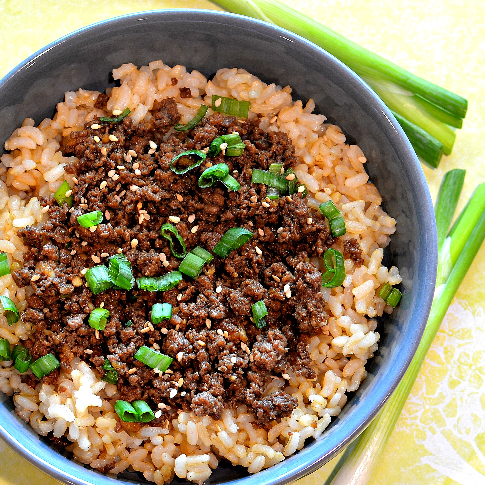

Mince & Rice

Description
This dish will set your mouth alive with flavours that combine all
the attributes of the ingridents used. The juices emmited
by the mince once seasoned properly is what makes this low budget meal a
true work of art.
Ingridents
- Packed of 90 sec rice
- 500g beef mince
- Ground paprika
- Onion Salt
- Lemon pepper salt
- Greek Yoghurt
- Cheese
Instructions
- Place mince in hot pan
- Add ground paprika, onion salt and lemmon pepper salt ontop of the min
- Mix the mince around and wait fot the mince to cook and become brown
- Once brown add 150g of Yoghurt and a handful of cheese
- Put the rice in the microwave for 90secs
- Take mince off heat once cheese and yoghurt have melted and mixed in
- Put rice on place and serve mice ontop
- Add extra garneshings as wanted e.g spring inions